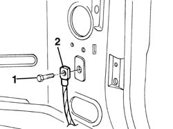

5505A30 earth carrier node (one) - r+r
- Path
- Procedures > 55 ELECTRICAL EQUIPMENT > 5505 ELECTRICAL CIRCUIT FOR INSTRUMENTS/INDICATORS > 5505A multi-function components > 5505A30 earth carrier node (one) - r+r
- Kind
- repair procedure (removal / refitting; the operation number is the code)
- Applies to
- all engines; all production periods
- Interactive page
- https://sloeber94.github.io/elrnDB-a156/en/#/3238381
Applies to: all engines; all production periods
 Removing
Removing
 Refitting
RefittingRemove components obstracting access to earth carrier node.
1. Unscrew screw.
2. Disjoin earth carrier node.

Applies to: all engines; all production periods
Refitting
RemovingCheck l' ring is not damaged and cables are properly anchored.
Check anchoring area is a sure connection and has no dirt.
Position earth carrier node and fix it with screw.
Test functionality of systems connected to that wire.